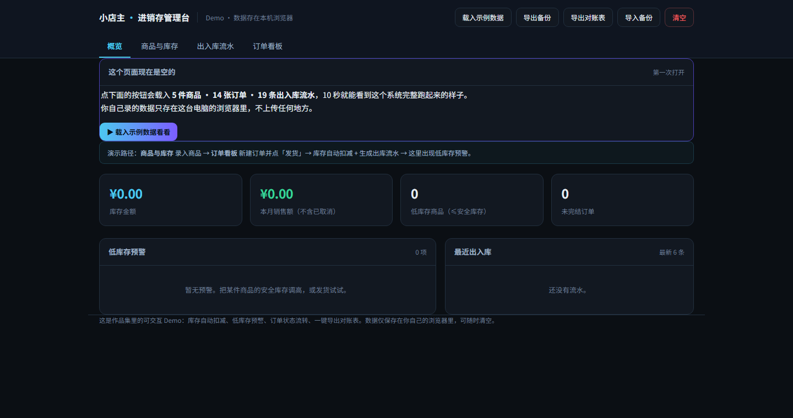
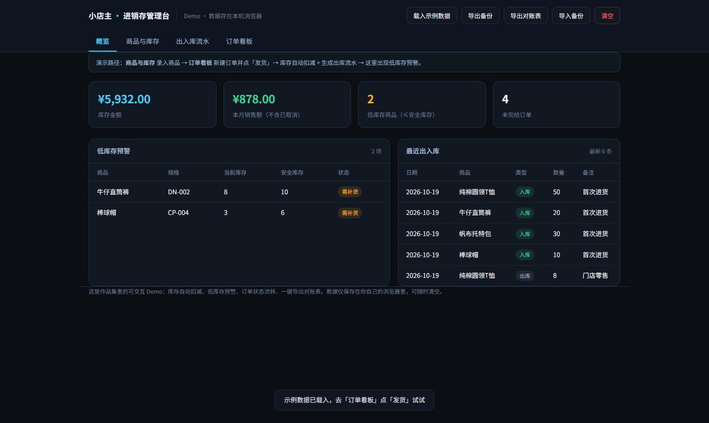

一家零售小店原来靠本子记进货出货，月底用计算器对账。我做了一个打开就能用的网页系统： 库存自动扣减、缺货提前预警、订单状态能流转、月底一键导出对账表。
进货出货记在本子上，卖一件划一道。月底结账要拿计算器把几十笔重算一遍，经常漏单、账实不符。
老板不知道「哪个货快没了」，等客人问了才发现断货，那一单就丢了。
买一套几十块的还不够——要装软件、要联网、要教。老板的原话是「太麻烦了，我还不如用本子」。
花一天跟着店里转，把「进 / 出 / 存 / 单」四件事拆开，画成一张流程图。发现真正的动作只有四个，其他都是记账的副产品。
拆成三张表（商品 · 流水 · 订单），做成一个单页应用。入库即更新库存，发货自动扣减并生成流水，不用记两遍。
第一版做了供应商管理、多仓、报表。老板看了一眼说太麻烦。我把这些全删了，把他每天重复最多的那个动作放到首页。
每一条数据变动都留时间和来源，数据只存在本机浏览器，可导出备份、可清空——老板不用担心「我的东西传出去了」。

